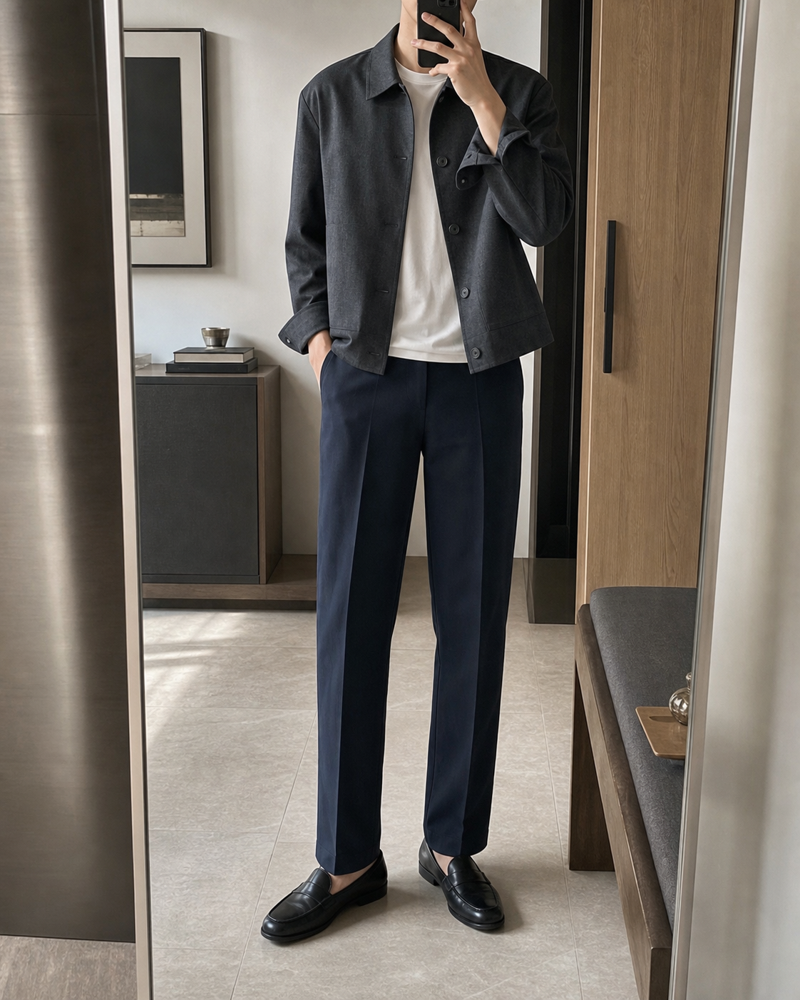
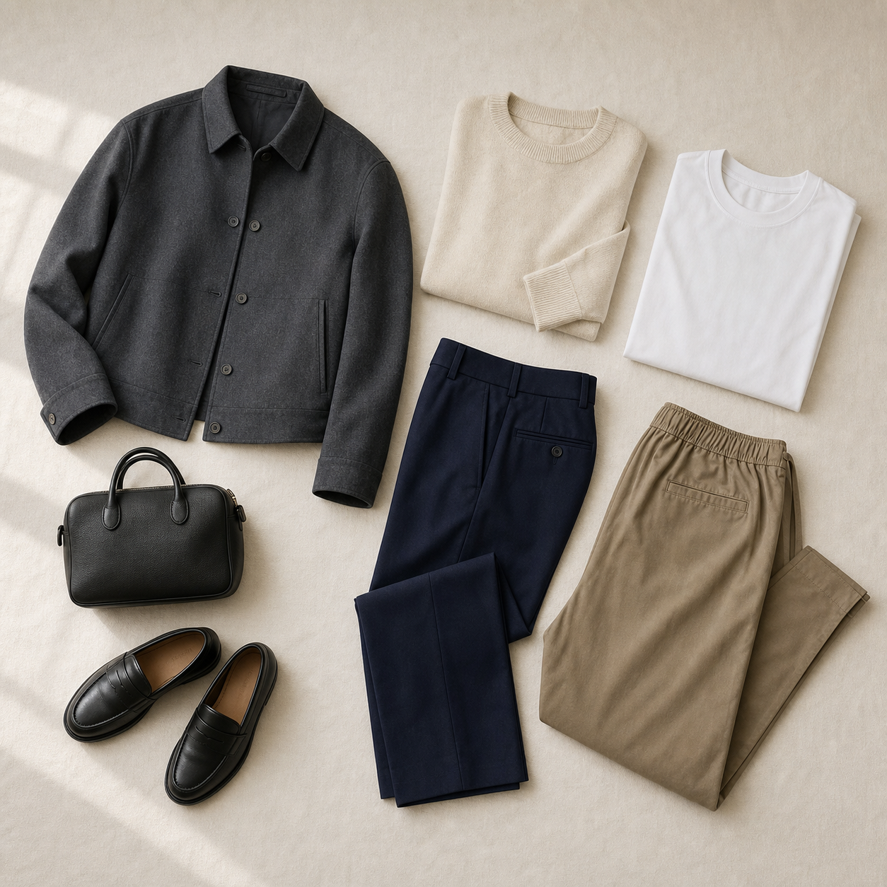

Vestige
今天穿什么

匹配度
94
已避开近 7 日重复
首选组合
灰短夹克 / 白 T / 深蓝直筒裤
显精神
适合会议
鞋包已匹配
深色下装平衡比例，外套 12 天未穿。
早晨三选
按日程排序72 件单品
衣橱资产

本周利用率
64% 4 件单品建议复穿
18
成套组合
7
核心单品
¥18
日均成本
穿搭记忆
复穿档案
可复穿记录
按场景聚合AI Studio
识别与替换
短夹克 96%
白 T 92%
直筒裤 94%
乐福鞋 89%
识别结果
4 件单品已入库
原搭配
替换后
替换下装